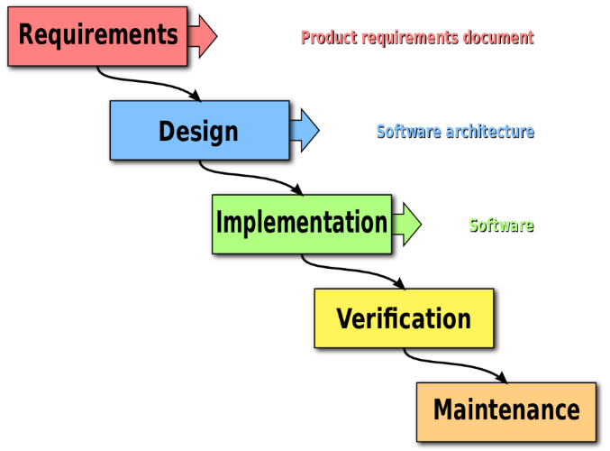

Agile
software development
Problems
with traditional software development
Traditional
- Phased development
- Anticipated result
- Up-front design

Waterfall model software development
When to use the waterfall model
- Requirements are known
- Technology is understood
- Resources are available
- The project is short
Users don't know what they want
Customers don't know what their requirements
Developers don't know future difficulties designing a new software product
Requirements change
changes get more and more expensive
customers don't get what they want
Project Takes Too Long
32% of projects delivered successfully
Long duration defers revenue
No Time for Testing
Quality assurance gets crunched
Late integration means late failures
Time Wasted on Junk
52% of requirements implemented
64% of functionality rarely used
Problems of Waterfall Model
- End-users don't know what they want
- Customers don't know what their requirements
- Developers don't know future difficulties designing a new software product
Agile software development
Agile is not a :
- methodology
- specific way of development software
- framework or process
Agile is a set of values and principles
The Agile Manifesto
is only 68 words
Individuals and interactions
Processes and tools
Working software
Comprehensive documentation
Customer collaboration
Contract negotiation
Responding to change
Following a plan
1. Our highest priority is to satisfy the customer through early and continuous delivery of valuable software
2. Welcome changing requirements, even late in development
3. Deliver working software frequently, from a couple of weeks to a couple of months
4. Business people and developers must work together daily throughout the project
5. Build projects around motivated individuals
6. The most efficient and effective method of conveying information to and within a development team is face-to-face conversation
7. Working software is the primary measure of progress
8. Agile processes promote sustainable development
9. Continuous attention to technical excellence and good design enhances agility
10. Simplicity - the art of maximizing the amount of work not done - is essential
11. The best architectures, requirements, and designs emerge from self-organizing teams
12. At regular intervals, the team reflects on how to become more effective, then tunes and
adjusts its behavior accordingly